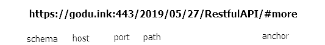

简介
- 本质：一种软件架构风格
- 核心：面向资源
- 解决的问题：降低开发复杂性；提高系统可伸缩性
相关概念
- 网络上的所有事物都可以被抽象为资源
- 每一个资源都有唯一的资源标识，对资源的操作不会改变这些标识
- 所有的操作都是无状态的，操作之间无联系。
HTTP协议
URL
schema://host[:port]/path[?query-string][#anchor]

请求
格式：请求行、消息报头、请求正文
- GET：请求获取Request-URI所标识的资源
- POST：在Request-URI所标识的资源后附加新的数据
- HEAD：请求获取由Request-URI所标识的资源的响应消息报头
- PUT：请求服务器存储一个资源，并用Request-URI作为其标识
- DELETE：请求服务器删除Request-URI所标识的资源
- OPTIONS：请求查询服务器的性能，或者查询与资源相关的选项和需求
响应
格式：状态行、消息报头、响应正文
- 200 - OK，服务器成功返回网页
- 301 - Moved Permanently（永久跳转），请求的网页已永久跳转到新位置。
- 304 - Not Modified（未修改） 自从上次请求后，请求的网页未修改过。 服务器返回此响应时，不会返回网页内容。
- 401 - Unauthorized（未授权） 请求要求身份验证。 对于需要登录的网页，服务器可能返回此响应。
- 403 - Forbidden（禁止访问）,服务器拒绝请求
- 404 - Not Found,服务器找不到请求的页面。
- 500 - Internal Server Error（内部服务器错误）
- 502 - Bad Gateway（坏的网关）,一般是网关服务器请求后端服务时，后端服务没有按照http协议正确返回结果。
- 503 - Service Unavailable（服务当前不可用）,可能因为超载或停机维护。
- 504 - Gateway Timeout（网关超时）,一般是网关服务器请求后端服务时，后端服务没有在特定的时间内完成服务。
与WebService对比
WebService通过HTTP协议发送请求和接收结果时都采用XML格式封装，并增加了一些特定的HTTP消息头。
- 效率和易用性
WebService不断扩充其本身协议的内容，性能和易用性有所下降，学习成本有所增加。
Restful简化开发者的不良设计，最大限度利用HTTP最初的应用协议设计理念。 - 安全性
SOAP的成熟性可以给需要提供给多开发语言，对于安全性要求较高的接口设计带来便利。
Restful对于资源型服务接口来说更合适，但是对安全性要求不高。
设计要素
- 资源路径
在Restful架构中，每个网址代表一种资源，所以网址中不能有动词，只能有名词。一般名词应该使用复数。 - HTTP动词
对于资源的操作（CURD），有HTTP动词表示。
主要有GET、POST、PUT、PATCH、DELETE。 - 过滤信息
例如分页、排序、筛选条件 - 状态码
服务器向用户返回的状态码和提示信息，使用标准HTTP状态码。 - 错误处理
如果状态码是4XX或5XX，就应该向用户返回出错信息。 - 返回结果
GET /collections：返回资源对象的列表
GET /collections/identity：返回单个资源对象
POST /collections：返回新生成的资源对象
PUT /collections/identity：返回完整的资源对象
PATCH /collections/identity：返回被修改的属性
DELETE /collections/identity：返回一个空文档
实战Demo
确认demo需求
- 用户注册、登录
- 文章发表、编辑、管理、列表
- 资源路径：/users、/articles
- HTTP动词：GET、POST、DELETE、PUT
- 过滤信息：文章分页筛选
- 状态码：200、403、404、422
数据库设计
- 用户表
ID、用户名、密码、注册时间 - 文章表
文章ID、标题、内容、发表时间、用户ID（外键）


如果长时间无法加载，请针对 disq.us | disquscdn.com | disqus.com 启用代理